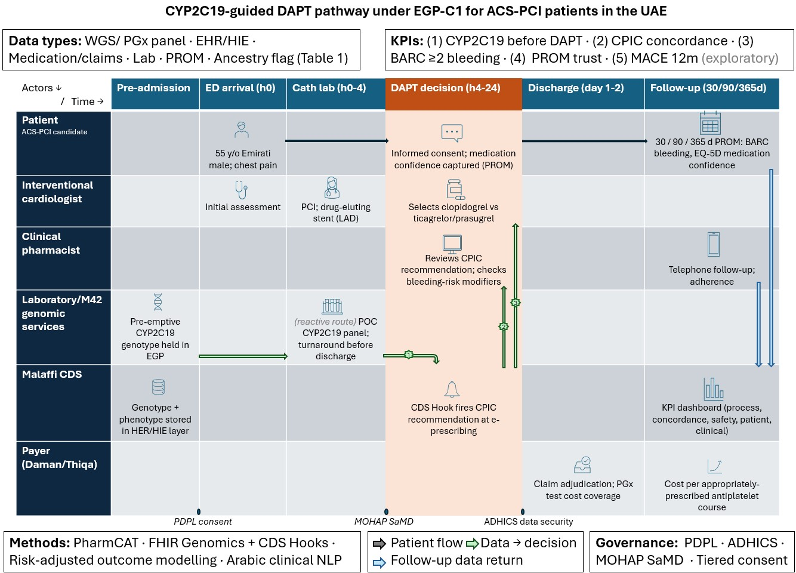

An implementation plan for CYP2C19-guided antiplatelet prescribing in the UAE. It works out the data, methods, governance, and evaluation a hospital would need to turn a genotype into a safer prescription after a stent.
Health-data architecture · CPIC / PharmCAT · HL7 FHIR Genomics · Governance (PDPL, ADHICS, SaMD)

After a heart attack and a stent, a patient needs an antiplatelet drug. The usual choice, clopidogrel, does not activate well in people who are CYP2C19 poor or intermediate metabolisers, who then stay at higher risk of another event. In a UAE pilot, about 47% of cardiovascular patients carried such a phenotype. A single global prescribing rule cannot be assumed for a population this mixed, which is the gap this plan addresses.
The plan centres on that one prescribing decision and traces it across the people and systems involved, from genetic testing through to follow-up.
Figure 1. The CYP2C19-guided dual antiplatelet pathway under the proposed EGP-C1 pilot. Rows are actors, columns are time, data converges at the prescribing decision, and the governance gates (data protection, security, medical-device approval) sit between stages.
Sound decision support needs more than a genotype. Six data types converge into one decision-grade record:
Four health data science methods turn the fabric into a working tool. CPIC star-allele translation with PharmCAT calls the phenotype. Rules-based decision support delivers the recommendation at e-prescribing through HL7 FHIR Genomics and CDS Hooks. Risk-adjusted outcome modelling checks whether the pathway actually changes outcomes. Arabic clinical natural language processing reads bleeding and adherence signals out of free-text notes.
None of this runs without governance, which is often where clinical-AI plans quietly fail. The plan maps the UAE data-protection law, the ADHICS security standard, and the Software-as-a-Medical-Device pathway that a prescribing tool would have to clear before it could touch a patient.
The recommended next step is EGP-C1, a twelve-month feasibility pilot rather than an outcomes trial. It would run in two Abu Dhabi centres with 500 to 1,000 patients, measured against five KPIs covering process, prescribing concordance, safety, patient experience, and an exploratory clinical outcome. The full plan, the data-fabric table, and the references are in the repository.